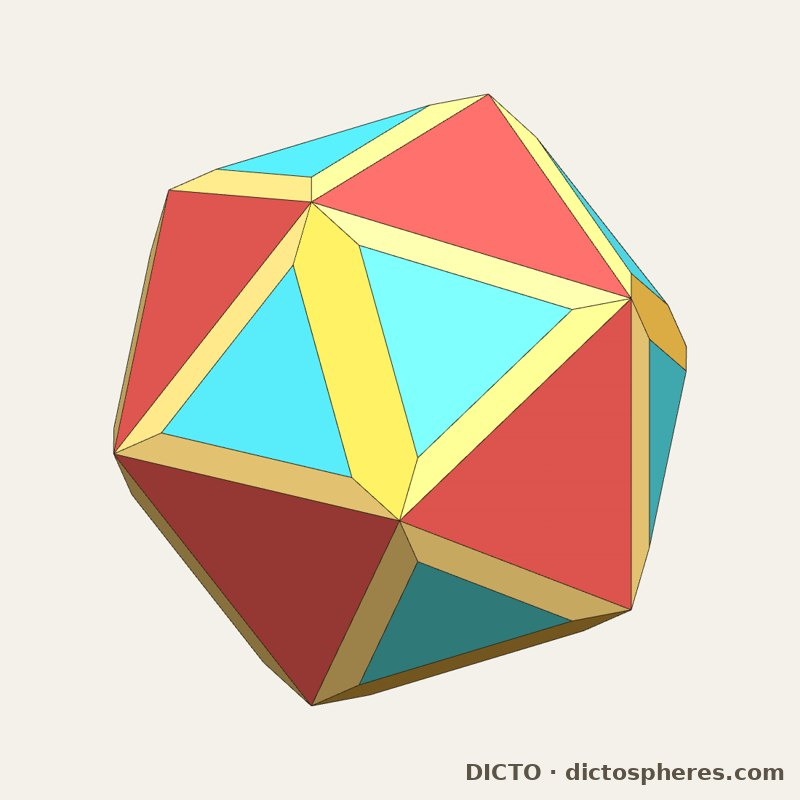
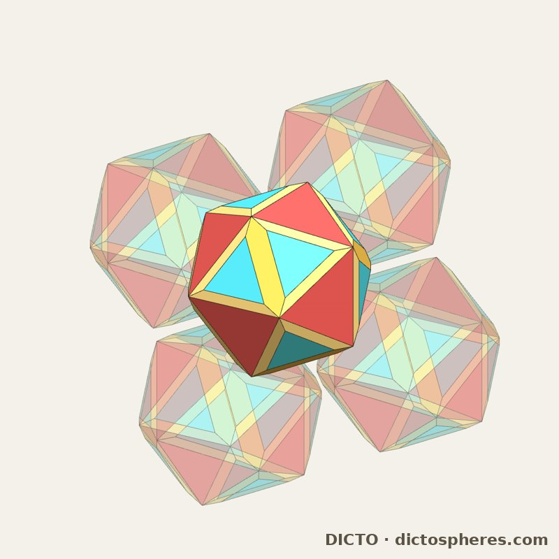
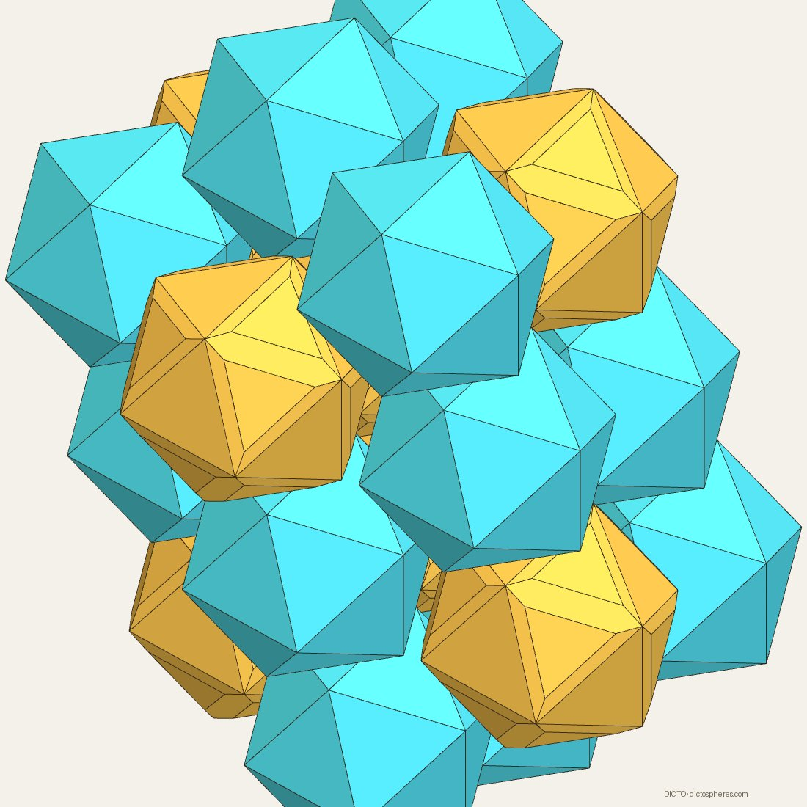
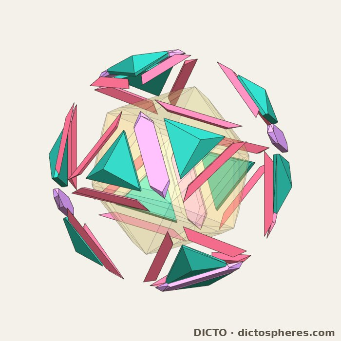
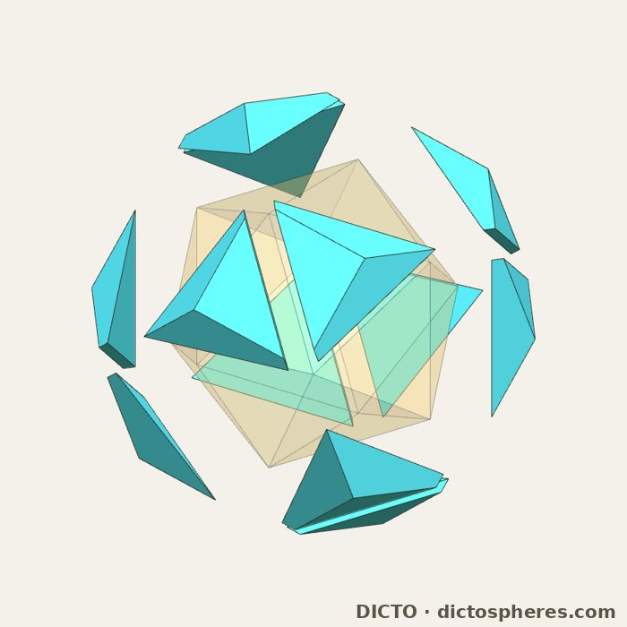
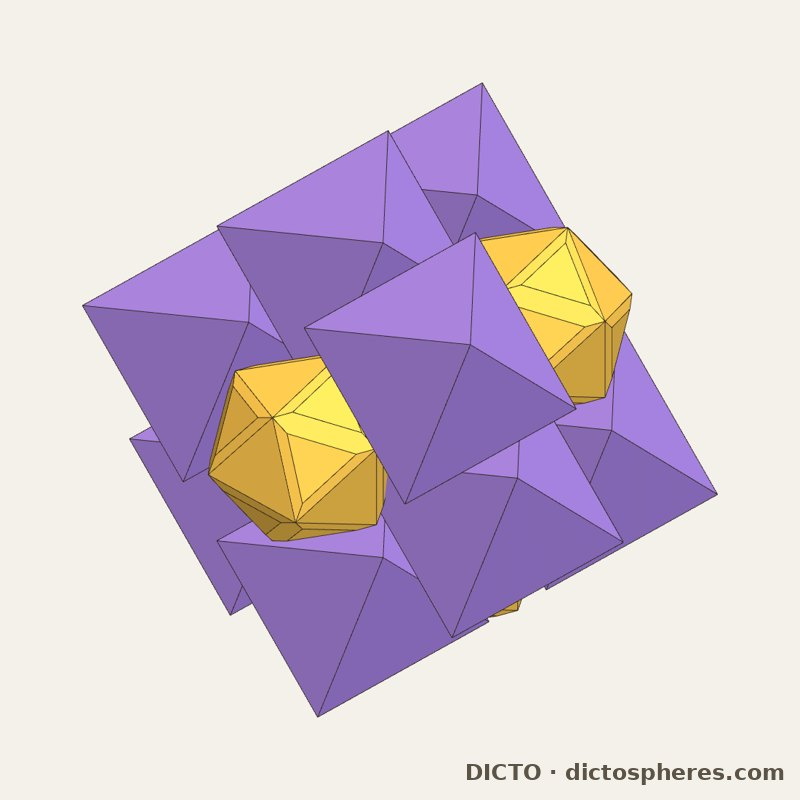
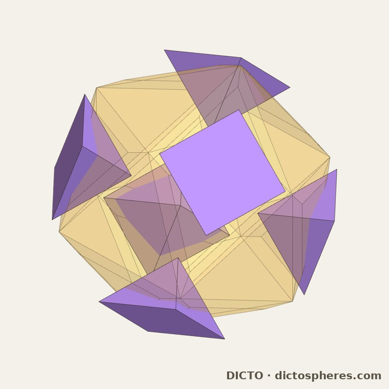
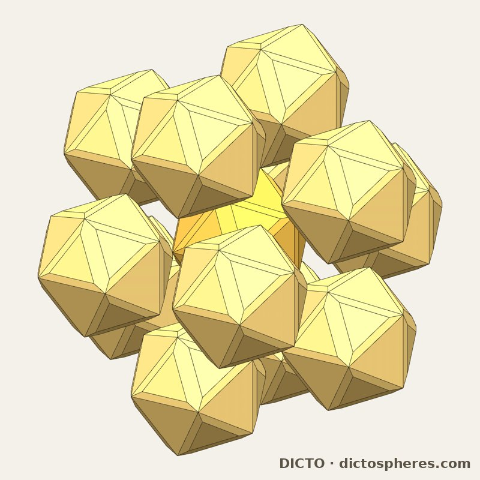
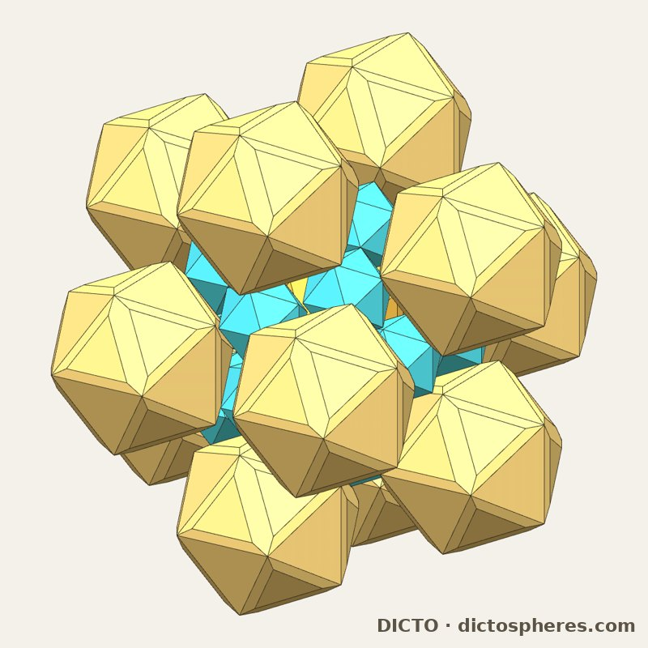

The Ogdoecontahedron's companion cut along its joints: a golden solid that fills 151/2 − 267√5/8 ≈ 87.12% of space in the Ogdoecontahedron's packing, copies meeting face to face, and with regular octahedra 1423/32 − 3113√5/160 ≈ 96.33%


Around one OCD of its packing (cell volume 512/729 + 256√5/729), the 60 golden adapter pieces (the full orbit of the 24 per cell) have a convex hull C with 72 corners, 30 hexagons in the golden planes of the OCD's envelope and 20 triangles in the three-fold planes through the adapters' outer corners (squared distance 14/27 − 10√5/243), volume (−18880 + 9760√5)/2187. Its combinatorial type is Conway t3jD, the triacontahedron truncated at its 20 three-fold corners, here at the depth set by the OCD (Antiprism). The DICTO OCD Stella is S = C cut by the packing's Voronoi cell, that is, along the 8 joints.
| Property | Value (exact) |
|---|---|
| corners, faces | 48 corners; 50 faces: 6 golden hexagons, 24 golden quadrilaterals, 12 triangles of C, 8 triangles in the OCD's joint hexagon planes (the cell's hexagon walls) |
| volume | (−4064 + 2240√5)/729 ≈ 1.296011 |
| packing | fills 151/2 − 267√5/8 ≈ 87.12% of space in the OCD's packing; copies meet face to face across the 8 joints |
| symmetry | pyritohedral (the cut keeps the 24 symmetries the OCD shares with the cubic packing) |
Table 1. The DICTO OCD Stella (stella_cut_exact.py → stella-cut-exact.txt).
The seed (exact). An outer OCD Stella of scale φ² holds 12 OCD Stellas on its five-fold axes, each touching it, and one of scale 1/φ at the centre touching all 12. By the Minkowski argument the seed closes exactly when no two of the twelve overlap; of the 66 pairs, 30 have gauge exactly 1 (touching, each copy 5 others, along the icosahedron's edges) and 36 exactly φ. So it closes exactly at φ² with the centre at 1/φ, and the gap is −69 + 31√5 ≈ 31.8%: the pattern of the Bodhi Seed (DICTO DOI: 10.5281/zenodo.23311353), though the OCD Stella is only pyritohedral (stella_seed_exact.py).
The OCD's packing (sites on a body-centred cubic lattice, cell volume (512 + 256√5)/729) splits into two diamond networks, and DICTO proposed putting a partner on the second while the OCD Stellas stay on the first. Each partner below lies in its own cell, as the OCD Stella does, and meets its eight joint neighbours on the cell's hexagon walls.
| Crystal | Fill (exact) | Space group (float) |
|---|---|---|
| OCD Stellas alone (both networks) | 151/2 − 267√5/8 ≈ 87.12% | Im-3 (No. 204) |
| OCD Stellas + icosahedra (pyrochlore) | 1523/32 − 669√5/32 ≈ 84.60% | Fd-3 (No. 203) |
| OCD Stellas + octahedra (pyrochlore) | 1423/32 − 3113√5/160 ≈ 96.33% | Fd-3 (No. 203) |
| OCD Stellas + octahedra (rock salt, octahedra on a quarter of the sites) | 3839/64 − 8453√5/320 ≈ 91.72% | Fm-3 (No. 202) |
Table 2. The crystals. With icosahedra or octahedra on the pyrochlore networks it is the same crystal with the partner swapped: both solids on sites of symmetry 23 (spglib; float).
With icosahedra (exact). On every site of the second network sits the icosahedron of the OCD's own 20 hexagon planes, volume (−80 + 80√5)/81, its 12 corners on the cell's walls. Every solid meets its 8 neighbours face to face, and the crystal fills 1523/32 − 669√5/32 ≈ 84.60%. DICTO proposed cutting the gap into pieces: cut by cones from each centre over its free faces, it falls into exactly four kinds of convex piece, 12 wedges round each icosahedron, (308 − 116√5)/2187 (6 corners, 5 faces), and round each OCD Stella 12 caps on its triangles, (346204 − 143140√5)/2381643 (9 corners, 7 faces), 6 slabs on its golden hexagons, (39896 − 17240√5)/216513 (16 corners, 12 faces), and 24 thin wedges on its golden quadrilaterals, (12596 − 5596√5)/88209 (6 corners, 5 faces). They sum exactly to the cells less the solids; the icosahedra's share of the gap is (961 + 209√5)/2454 ≈ 58.2%.



With octahedra (exact). DICTO proposed the octahedron next. The eight joint planes bound a regular octahedron, |x| + |y| + |z| ≤ R with R = 2φ/3 in cube axes, exactly 9/8 of the cell: it covers its whole cell, and its six tips pass the square walls, each (32 + 16√5)/2187, 1/48 of a cell, each apex halfway from the wall to the next site. Only the six square neighbours' tips reach an OCD Stella, each taking the same notch, 392/2187 − 88√5/1215 ≈ 0.017287 (6 notches: 8.00% of the Stella), leaving the notched OCD Stella, −1616/243 + 12784√5/3645 ≈ 1.192289. Octahedra on hexagon neighbours meet face to face; on square neighbours they would overlap tip to tip, so no two octahedra may be square neighbours. A square step changes a site's class within its parity, so with octahedra on one diamond network (one even and one odd class) every OCD Stella has octahedra on all six square sides: the crystal fills 1423/32 − 3113√5/160 ≈ 96.33%. With octahedra on one class only (rock salt) it fills 3839/64 − 8453√5/320 ≈ 91.72%. The float values found on 16 October agree.


The Atom 13 (float; DICTO proposed it). Twelve OCD Stellas on the five-fold axes of a central one, each pushed out until it touches the centre (distance 1.56743), meet the centre flat with six corners on its face planes and never touch each other (gap 0.31); the thirteen fill 49.82% of their outline. Set flat on the centre's twelve triangles instead, neighbours 41.8° apart overlap. Twenty icosahedra on the centre's twenty triangles, in the three-fold gaps between the twelve, fit up to 0.4878 of the crystal's icosahedron, limited by the twelve OCD Stellas; the 33 solids fill 58.20% of their outline.


Known: the combinatorial type of C (Conway t3jD, the chamfered icosahedron) and a related golden space-filler cut from the rhombic triacontahedron on a body-centred cubic lattice (Kabai, below); binary crystals of hard polyhedra, such as tetrahedra with octahedra (Cadotte et al., Soft Matter 12, 7073–7078, 2016), and dense packings of the Platonic and Archimedean solids (Torquato and Jiao, Phys. Rev. E 80, 041104, 2009). Not found, in the sources checked: the OCD Stella, its 87.12% packing, and its seed; its crystals with icosahedra or octahedra, their fills, the gap pieces, the notched OCD Stella and the Atom 13 (library and web, 20 October 2026). Every "not found" is limited to the sources listed here and in the Appendix.
Sources checked on the web (17 October 2026):
Polyhedron software libraries (17 October 2026):
polytopes.*): its icosahedral constructors are the icosahedron, dodecahedron, icosidodecahedron, truncated icosahedron and the other Archimedean solids, and the pentakis dodecahedron; none of the solids here.PolyhedronData (needs Mathematica) and Stella / Great Stella (R. Webb; its library beyond the uniform, Johnson and Stewart-toroid models is not listed online). No claim is made about them.The reference library: see the Appendix.
In the study (branch research: studies/2026-10-16-ocd-pyrochlore): stella_cut_exact.py → stella-cut-exact.txt, stella_seed_exact.py → stella-seed-exact.txt, ocd_gbpc_hull.py, companion_variants.py; the crystals: pyro_icosahedra.py, crystal_gap_exact.py → crystal-gap-exact.txt, stella_octa_pyro.py, crystal_symmetry.py → crystal-symmetry.txt, stella_atom13.py → stella-atom13.txt; and in studies/2026-10-20-stella-octahedra: stella_octa_exact.py → stella-octa-exact.log (the octahedra crystals, exact, computed in cube axes; volumes and fills do not depend on the turn). See it in the app: Kaleidohedra, 3D+ → OCD Stella Crystals.
DICTO's reference library (private copies, with public citations in the Kaleidohedra repository's docs/SOURCES.md) holds 234 entries. The full text of the 64 entries below was searched on 17 October 2026 for the solid's construction, its key numbers and its name (pentakis / kis-dodecahedron / hexecontahedron / hull of a dodecahedron and an icosahedron; enneacontahedron / rectified truncated icosahedron / compounds of the truncated icosahedron; chamfered or truncated triacontahedra; the four DICTO names). None contains any of the four solids introduced in these papers; the only hits are mentions of the classical pentakis dodecahedron (Kepler 1619; Messer 1995; de Graaf, van Roij and Dijkstra 2011) and of the chamfer operation (Goldberg 1937; the Goldberg-polyhedron and Fullerene articles). Not text-searched: 12 image-only scans and 158 link-only entries (copyrighted books and articles held as citations); no claim is made about them.
| Author(s) | Year | Title |
|---|---|---|
| Luca Pacioli, Leonardo da Vinci (ill.) | 1509 | Divina proportione |
| Albrecht Dürer | 1525 | Underweysung der Messung mit dem Zirckel und Richtscheyt |
| Wenzel Jamnitzer, Jost Amman (engr.) | 1568 | Perspectiva corporum regularium |
| Johannes Kepler | 1619 | Harmonices mundi libri V |
| M. Goldberg | 1937 | A class of multi-symmetric polyhedra |
| Haresh Lalvani | 1990 | Transformational part-count in layered octahedral-tetrahedral truss configurations (NASA TM-102635) |
| P. W. Messer | 1995 | Stellations of the rhombic triacontahedron and beyond |
| M. Baake, F. Gähler | 1998 | Symmetry structure of the Elser-Sloane quasicrystal |
| T. C. Hales | 1998 | An overview of the Kepler conjecture |
| M. Baake | 1999 | A guide to mathematical quasicrystals |
| O. Ogievetsky, Z. Papadopolos | 1999 | On Quasiperiodic Space Tilings, Inflation and Dehn Invariants |
| U. Betke, M. Henk | 1999 | Densest lattice packings of 3-polytopes |
| Z. Papadopolos, O. Ogievetsky | 1999 | On Inflation Rules for Mosseri-Sadoc Tilings |
| Z. Papadopolos, O. Ogievetsky | 1999 | On quasiperiodic space tilings, inflation and Dehn invariants |
| R. V. Moody | 2000 | Model sets: a survey |
| M. Senechal | 2004 | Donald and the golden rhombohedra |
| Wikipedia contributors (2007 mirror) | 2007 | Kyushindo (2007 version) |
| M. Koca, M. Al-Ajmi, N. O. Koca | 2009 | Grand antiprism and quaternions |
| M. Koca, M. Al-Ajmi, N. O. Koca | 2009 | Quaternionic representation of snub 24-cell and its dual polytope derived from E8 root system |
| S. Torquato, Y. Jiao | 2009 | Dense packings of polyhedra: Platonic and Archimedean solids |
| P. Kramer | 2010 | Gateways towards quasicrystals |
| A. M. Cutler, E. Schulte | 2011 | Regular polyhedra of index two, I |
| D. Frettlöh | 2011 | Icosahedral tilings in R3: the ABCK tilings (draft chapter) |
| J. de Graaf, R. van Roij, M. Dijkstra | 2011 | Dense regular packings of irregular non-convex particles |
| M. Koca, N. O. Koca, M. Al-Ajmi | 2011 | Branching of the W(H4) polytopes and their dual polytopes under the Coxeter groups W(A4) and W(H3) represented |
| M. Koca, N. O. Koca, M. Al-Barwani | 2011 | Snub 24-cell derived from the Coxeter-Weyl group W(D4) |
| T. Etzion | 2011 | Product constructions for perfect Lee codes |
| A. Garber, A. Gavrilyuk, A. Magazinov | 2012 | The Voronoi conjecture for parallelohedra with simply connected delta-surface |
| J. C. Lagarias, C. Zong | 2012 | Mysteries in packing regular tetrahedra |
| M. Baake, U. Grimm | 2012 | Mathematical diffraction of aperiodic structures |
| M. Koca, N. O. Koca, R. Koc | 2012 | Affine Coxeter group Wa(A4), quaternions, and decagonal quasicrystals |
| P. F. Damasceno, M. Engel, S. C. Glotzer | 2012 | Crystalline assemblies and densest packings of a family of truncated tetrahedra and the role of directional en |
| M. Kléman | 2013 | Defects in quasicrystals, revisited: I-flips, approximants, phason defects |
| N. Fujita, H. Takano, A. Yamamoto, A.-P. Tsai | 2013 | Cluster packing geometry for Al-based F-type icosahedral alloys |
| P.-P. Dechant, J. Wardman, T. Keef, R. Twarock | 2014 | Viruses and fullerenes: symmetry as a common thread? |
| A. Campello, G. C. Jorge, J. E. Strapasson, S. I. R. Costa | 2015 | Perfect codes in the lp metric |
| K. Deguchi, M. Nakayama, S. Matsukawa, K. Imura et al. | 2015 | Crystal structure of superconducting 1/1 cubic Au-Ge-Yb approximant with Tsai-type cluster |
| M. Baake, D. Damanik, U. Grimm | 2015 | What is aperiodic order? |
| M. Firsching | 2015 | Computing maximal copies of polytopes contained in a polytope |
| N. O. Koca, M. Koca, A. Al-Mukhaini, A. Al-Qanobi | 2015 | Quaternionic representations of the pyritohedral group, related polyhedra and lattices |
| R. Twarock, M. Valiunas, E. Zappa | 2015 | Orbits of crystallographic embedding of non-crystallographic groups and applications to virology |
| R. Twarock, M. Valiunas, E. Zappa | 2015 | Orbits of crystallographic embedding of non-crystallographic groups and applications to virology |
| C. Hann, J. E. S. Socolar, P. J. Steinhardt | 2016 | Local growth of icosahedral quasicrystalline tilings |
| R. M. K. Dietl, J.-H. Eschenburg | 2016 | The icosahedral quasiperiodic tiling and its self-similarity |
| A. Stergiou | 2018 | Bootstrapping hypercubic and hypertetrahedral theories in three dimensions |
| A. Garber | 2019 | Voronoi conjecture for five-dimensional parallelohedra |
| D. Poland, S. Rychkov, A. Vichi | 2019 | The conformal bootstrap: theory, numerical techniques, and applications |
| R. Twarock, A. Luque | 2019 | Structural puzzles in virology solved with an overarching icosahedral design principle |
| T. Ishimasa | 2019 | Icosahedral quasicrystal, 1/1 and 2/1 approximants in Zn-based ternary alloys containing Au and Yb/Tb |
| A. Al-Siyabi, N. O. Koca, M. Koca | 2020 | Icosahedral Polyhedra from D6 lattice and Danzer's ABCK tiling |
| A. Al-Siyabi, N. O. Koca, M. Koca | 2020 | Icosahedral polyhedra from D6 lattice and Danzer's ABCK tiling |
| M. Koca, R. Koc, N. O. Koca, A. Al-Siyabi | 2020 | Icosahedral tiling with dodecahedral structures |
| N. O. Koca, R. Koc, M. Koca, A. Al-Siyabi | 2020 | Dodecahedral Structures with Mosseri-Sadoc Tiles |
| B.-X. Lao, S. Rychkov | 2023 | 3D Ising CFT and exact diagonalization on icosahedron: the power of conformal perturbation theory |
| D. Smith, J. S. Myers, C. S. Kaplan, C. Goodman-Strauss | 2023 | An aperiodic monotile |
| I. J. Dejter, L. R. Fuentes, C. A. Araujo | 2025 | Perfect truncated-metric codes in lattice graphs and superlattice graphs |
| S. Rychkov | 2025 | Conformal bootstrap: from Polyakov to our times |
| M. Kovačević | 2026 | An isodiametric theorem and lattice diameter-perfect codes in A3 |
| R. Al Raisi, N. O. Koca, M. Koca, R. Koc | 2026 | Modified Mosseri-Sadoc tiles from D6 |
| Wikipedia contributors | 2026 | Kenshiro Abbe |
| Wikipedia contributors | 2026 | Mitsusuke Harada |
| Wikipedia contributors | 2026 | n-flake (Sierpinski icosahedron) |
| Wikipedia contributors | 2026 | Fullerene |
| Wikipedia contributors | 2026 | Goldberg polyhedron |